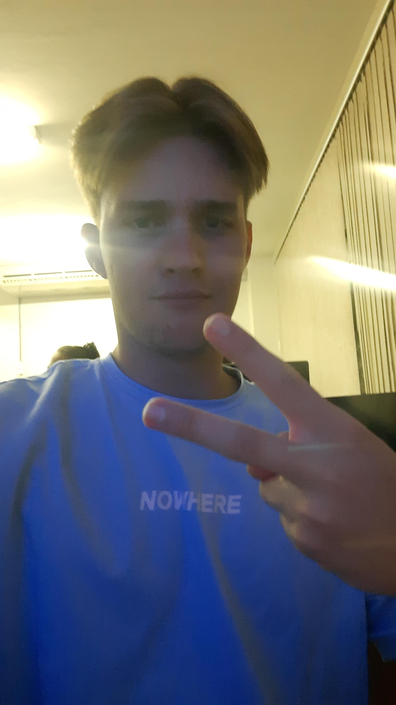
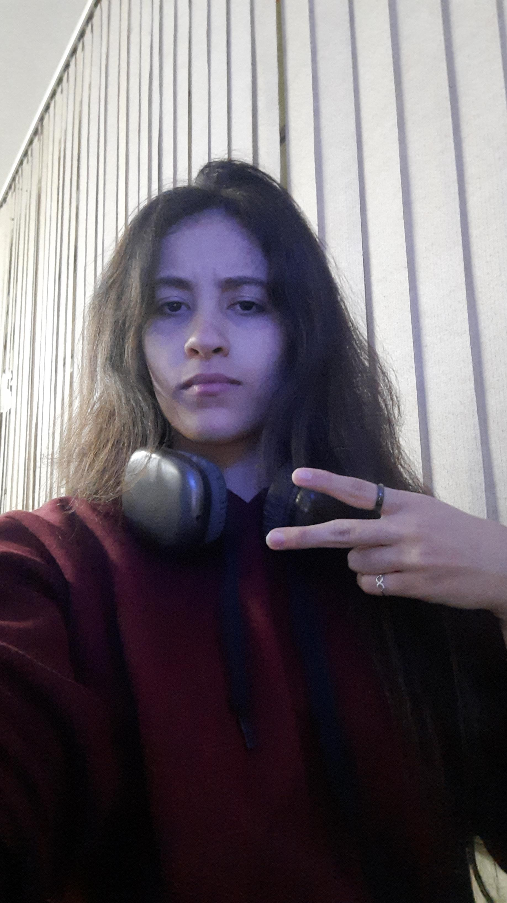

Miguel

Olá, me chamo Miguel Ricardo Buttendorf, tenho 18 anos, e faço Engenharia de Software pela Católica SC. Um dia pretendo ser um desenvolvedor de Software diversificado, seja de app ou de game.
Coisas que eu gosto
- Jogar videojogos digitais online;
- Aprender programção;
- Meu professor (Luiz Almeida) de WEB/UX.
Laura

Me chamo Laura Heloísa Luchez, tenho 17 anos e sou estudante do curso de graduação de Engenharia de Software no centro universitário Católica de Santa Catarina. Escolhi este curso com o objetivo de me tornar uma desenvolvedora Full Stack.
Coisas que eu gosto
- Patinação Artística;
- Programar/ Codar;
- Meu professor (Luiz Almeida) de WEB/UX.